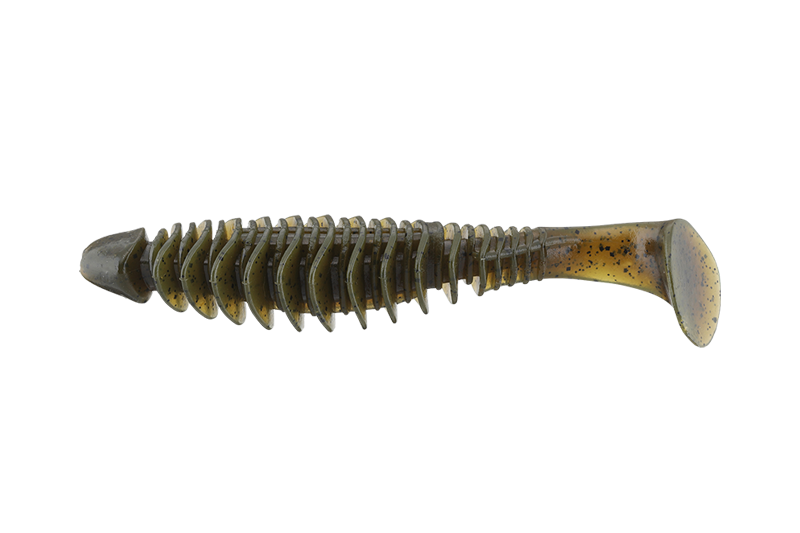
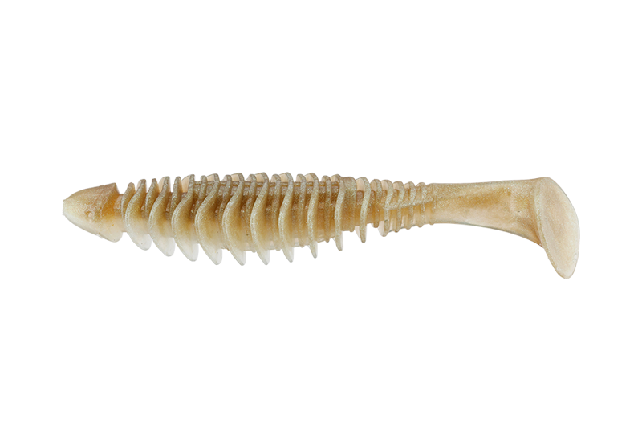
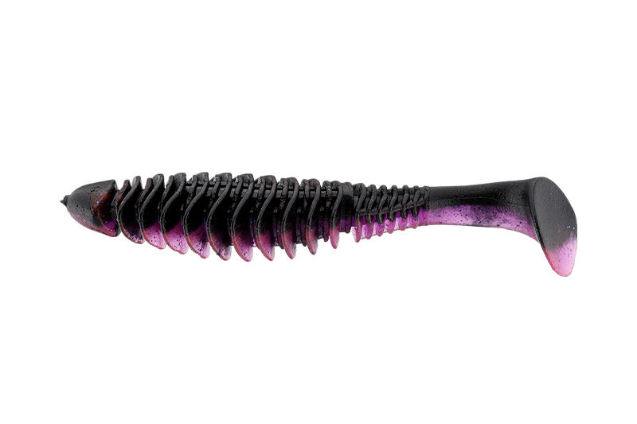

デッドスローラー
（DEADSLOWLER）
デッドスローラー（DEADSLOWLER）はJACKALL（ジャッカル）のバス用シャッドテールワームです。
障害物に寄り添う大きなバスを攻略するために作られた食わせ特化のワームで、ゆっくり巻いてもテールがしっかり動き、デッドスローでバイトを引き出せるのが最大の魅力です。

画像出典:JACKALL公式HP
スペック
- メーカー
- JACKALL（ジャッカル）
- タイプ
- シャッドテールワーム
- サイズ
- 4.8インチ／5.5インチ
- 入数
- 5本
- カラー
- 全14色
- ターゲット
- ブラックバス
- 価格
- 1,100円（4.8インチ）／1,210円（5.5インチ）（税込）
- その他
- Feco認定製品（JB/NBCトーナメントで使用可能）
▼今すぐチェック

デッドスローラーの特徴
遅く巻いても強く動く、マルチリブのシャッドテールワーム
-
水をつかんで離さないマルチリブ
ボディ全体に大きく深いリブを並べ、水の抵抗を最大限に受ける設計。ボディ全体に水流をまとわせることで、デッドスローでも安定したピッチでウォブリングする。
-
ねじれを抑えるテールキールとリーフ型パドル
テールの先までアーチ状のキールを伸ばして、テールのねじれを抑えたウォブリング主体のアクションにしている。パドルは先が細くなるリーフ型の楕円形で、立ち上がりがよく、巻き始めからすぐに動き出す。
-
張りのあるソフトマテリアル
デッドスローで一番よく動くように配合した柔らかめの素材で、適度な張りも持たせている。4.8インチと5.5インチの2サイズがあり、ベイトの大きさやフィールドに合わせて選べる。
デッドスローラーの使い方
ジグヘッドやテキサスリグ、ノーシンカーなどにセットして、テールが動くぎりぎりの遅さで、障害物の際をゆっくり巻いてくるのが基本です。
速く巻くより、デッドスローでじっくり見せるほうがこのワームの持ち味が出ます。障害物に当たったら一瞬止めて、また巻き始めると食わせのきっかけを作れます。
デッドスローラーの得意な状況
冬や春先の低水温期など、バスの動きが鈍くて速い動きに反応しない場面が出番です。
岸際や桟橋、立ち木などの障害物に付いた大きなバスに、ゆっくり長く見せて口を使わせられるので、渋い日でも釣れるチャンスを作れます。
ワカサギやオイカワなど小魚がベイトになっているフィールドとも相性がよいワームです。
ワンポイント
シンカーやジグヘッドは、狙いたいレンジをデッドスローで通せる、できるだけ軽い重さを選ぶのがコツです。もう一段深いレンジを障害物にぶつけながら攻めたい時は、高比重の「デッドスローラー フルコンタクト」もあります。
デッドスローラーのサイズの使い分け
| サイズ | 入数／価格（税込） | 得意な場面 |
|---|---|---|
| 4.8インチ | 5本／1,100円 | 標準的なベイトサイズのフィールドで、まず使いたい基本のサイズ |
| 5.5インチ | 5本／1,210円 | ベイトが大きい時や、大型のバスに絞って狙いたい時に |
どちらもカラーは全14色です。障害物にぶつけながら一段下のレンジを攻める高比重の「デッドスローラー フルコンタクト」（4.8インチ・5.5インチ）もあります。
人気カラー
デッドスローラーは全14色展開。人気カラーを紹介します。

キョウヤグリパンどんなフィールドでも使いやすいグリーンパンプキン系。迷った時の1色に。

スーパーホワイト濁った水や曇りの日でも見つけてもらいやすい、シルエットのはっきりしたカラー。

生ワカサギワカサギを食べているバスに合わせやすいナチュラルカラー。

マッディコンフィデンス濁りの入ったマッドウォーターで、自信を持って投げられるカラー。
画像出典:JACKALL公式HP
▼今すぐチェック
デッドスローラーに似ているルアー
-
 ベローズシャッド2.8
ジークラック
詳細はこちら＞
ベローズシャッド2.8
ジークラック
詳細はこちら＞
全身の深いリブが水をつかむシャッドテール。もっと小さいシルエットで食わせたい時に。
-
 レアリス リグルシャッド2.5
DUO
詳細はこちら＞
レアリス リグルシャッド2.5
DUO
詳細はこちら＞
扁平なツイストボディで全身がくねるシャッドテール。小さめのベイトに合わせたい時に。
-
 ダークスリーパー
メガバス
詳細はこちら＞
ダークスリーパー
メガバス
詳細はこちら＞
背びれでフックを隠したボトム用スイムベイト。ボトムを根掛かりを避けて引きたい時に。